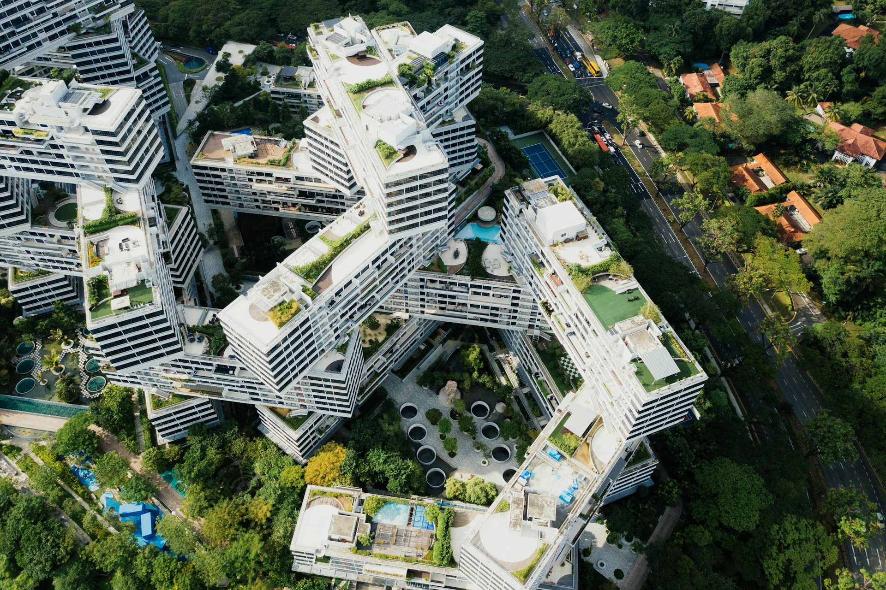

Selected Projects
Showcasing work across urban innovation, software solutions, and design strategy.
Web Design & Development
Low-Code Landing Page for Smart City Telemedicine
Role: Web Designer & Developer
Designed and developed a low-code, sleek landing page for a smart city telemedicine application (Veltri), showcasing its features, benefits, and impact.
View Project →Graphic Design
Nairobi Nights – Sustainable Candle Branding
Role: Graphic Designer
Created a brand identity and logo design for a company introducing sustainable, handcrafted candles. Focused on eco-conscious branding with an elegant aesthetic.
View Project (Canva Edit Link) →Urban Planning & Policy

Urban Policy & Infrastructure Assessment
Policy Development for Integrated Water Resource Management
Collaborated with public and private partners to develop innovative policy frameworks for sustainable water resource management.
View policy-development-stakeholder-meeting image →Building Audit & Smart Urban Cities (Kenya)
Conducted comprehensive building audits, demonstrating expertise in urban infrastructure assessment and smart city technologies.
View Building Audit Image →